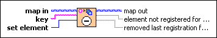

Registration Map:Unregister VI
Owning Palette: Registration Map VIs
Requires: Base Development System
Removes an entry from a registration map. This VI signals the calling VI if the given element is the last element registered for this key.

 Add to the block diagram Add to the block diagram |
 Find on the palette Find on the palette |